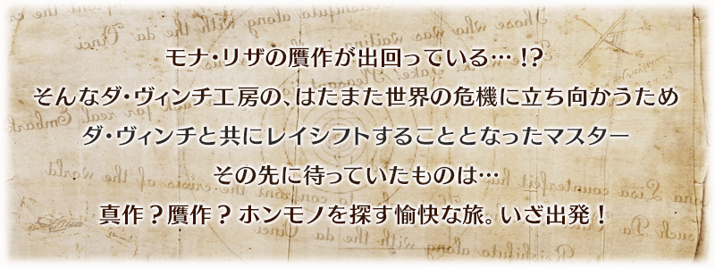
◆活動舉辦期間◆
2018年1月10日(三) 17:00～1月20日(六) 11:59
◆活動概要◆
舉辦期間限定活動「復刻:達文西與七位贗作英靈 輕量版」！
為了查明世上充斥贗作之謎，達文西挺身而出。
與自由奔放的達文西的旅途上究竟會出現什麼！？
2種類的景品抽選會同時於本回的活動登場！
活動期間中，在管理室(ターミナル)會出現活動關卡！
另外，享受故事的主線關卡會逐日開放。
通過主線關卡的第一節後會出現可收集活動道具的自由關卡和加成關卡，挑戰關卡收集景品抽選所須的道具吧！
※本活動為再調整2016年舉辦的期間限定活動「達文西與七位贗作英靈」更容易遊玩的「復刻輕量版活動」。
◆活動參加條件◆
只限通過「第一特異點 邪龍百年戰爭 奧爾良」的Master才能參加
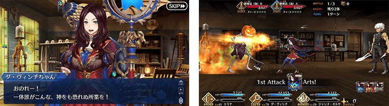
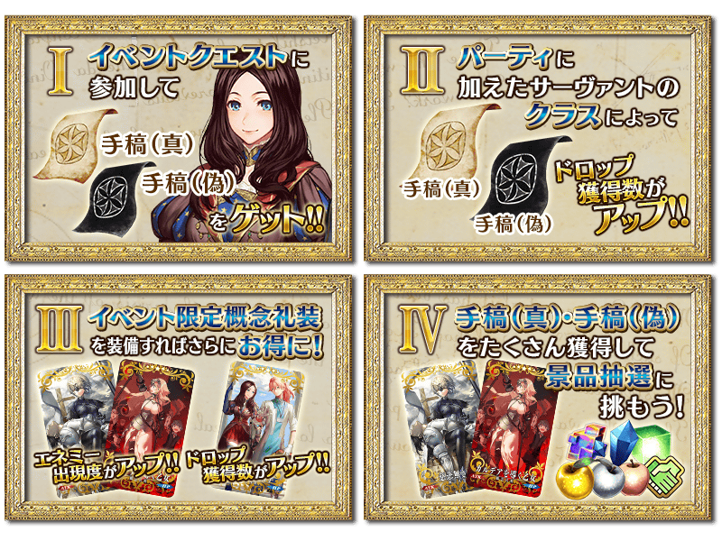
於活動關卡收集「手稿(真)」「手稿(偽)」，在真作交換所及贗作交換所交換景品吧！
景品的交換是以抽選方式進行。
真作交換所及贗作交換所會在每個陣容放入1個大獎道具。
抽到大獎道具，執行「景品重置」的話，會補充新的大獎道具。
有放入大獎道具的陣容，每個交換所各有10次！
收到大獎道具點擊「景品重置」鍵，補充大獎道具吧！
※第11次以後不會補充大獎道具及「黃金果實」「白銀果實」。入手陣容內的全道具才能進行「景品重置」。
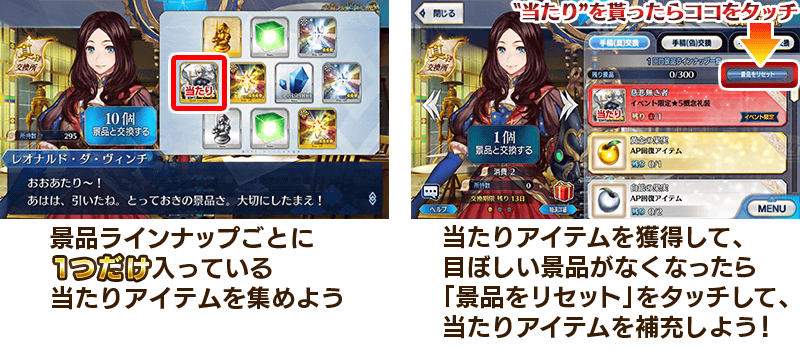
◆「真作交換所」景品陣容◆
| 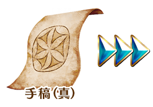 |
【大獎道具】 ■第6次 ■第7～10次 【技能強化＆靈基再臨素材】 【靈基再臨素材】 【其他道具】 |
◆「贗作交換所」景品陣容◆
| 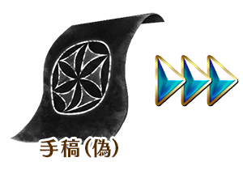 |
【大獎道具】 ■第6次 ■第7～10次 【技能強化＆靈基再臨素材】 【靈基再臨素材】 【其他道具】 |
享受故事的主線關卡會逐日開放。
通過主線關卡第一節的話，會開放可收集活動道具的自由關卡。
| 關卡名 | 時間表 |
|---|---|
| 主線關卡 序幕・第一節 | 1月10日(三) 17:00～ 1月20日(六) 11:59 |
| 主線關卡 第二節 | 1月11日(四) 17:00～ 1月20日(六) 11:59 |
| 主線關卡 第三節 | 1月12日(五) 17:00～ 1月20日(六) 11:59 |
| 主線關卡 第四節 | 1月13日(六) 17:00～ 1月20日(六) 11:59 |
| 主線關卡 第五節 | 1月14日(日) 17:00～ 1月20日(六) 11:59 |
| 主線關卡 第六節 | 1月15日(一) 17:00～ 1月20日(六) 11:59 |
| 主線關卡 最終節 | 1月16日(二) 17:00～ 1月20日(六) 11:59 |
※在上次舉辦時獲得「聖杯」的情況，於輕量版復刻活動會以「傳承結晶」代替聖杯做為通過報酬。
◆超值攻略方法・其1◆
主線關卡第一節通過後會開放可各大量獲得「手稿(真)」「手稿(偽)」的加成關卡。
關於同時開放的2個加成關卡，1天只能通過(真)(偽)其中一個。
整好隊伍，挑戰想要入手手稿的關卡吧！
※加成關卡的舉辦時間是當天17:00～隔天的16:59出現，跨過17:00就會顯示新加成關卡。
請注意只有最終日的結束時間為11:59。
◆超值攻略方法・其2◆
將特定職階的Servant編入隊伍，會提升「手稿(真)」「手稿(偽)」各自的掉落獲得數！
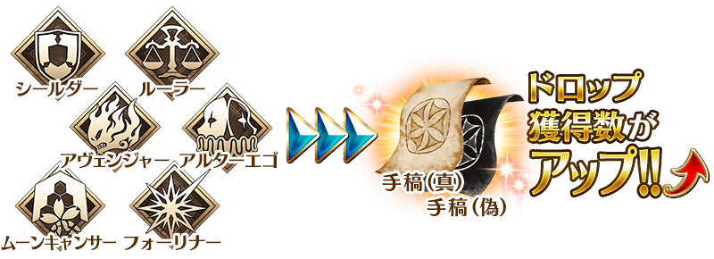
◆超值攻略方法・其3◆
裝備可在真作交換所及贗作交換所入手的活動限定概念禮裝的話，掉落「手稿(真)」「手稿(偽)」敵人的出現度會提升。
敵人的出現度提升的話，收集特定手稿的效率會更好。
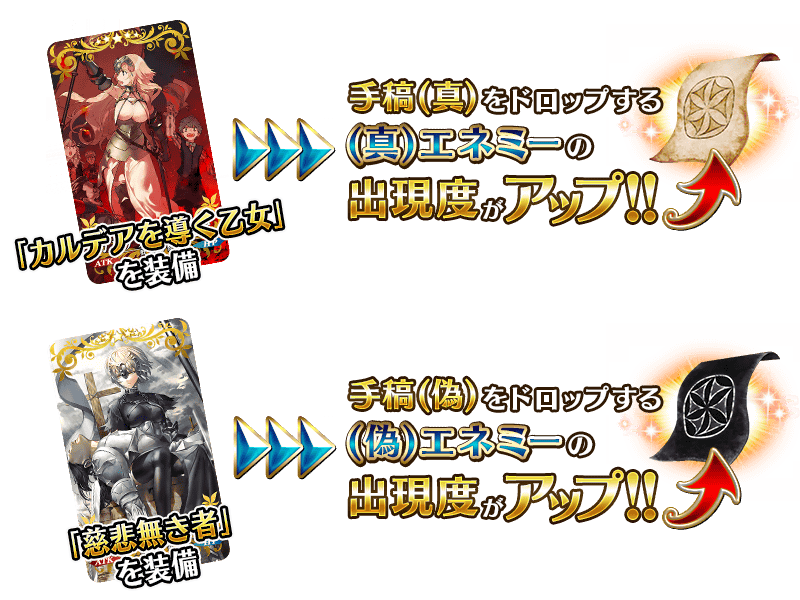
◆超值攻略方法・其4◆
裝備於聖晶石召喚Pick Up中的概念禮裝的話，會增加活動専用道具「蒙娜麗莎(偽)」「自畫像(偽)」「人體圖(偽)」的掉落獲得數。
還有，裝備可靠收集活動專用道具交換的活動限定概念禮裝的話，會增加「手稿(真)」與「手稿(偽)」雙方的掉落獲得數。
※請注意於各關卡的道具掉落率並非100％。
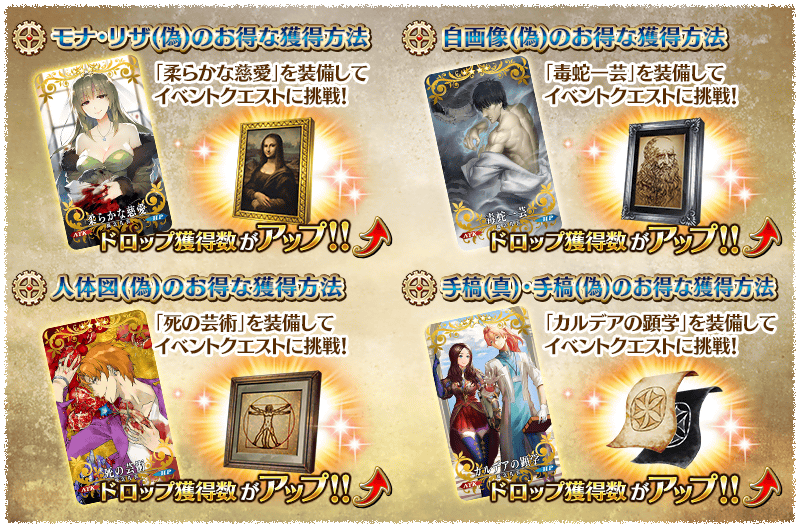
◆活動限定概念禮裝◆
| 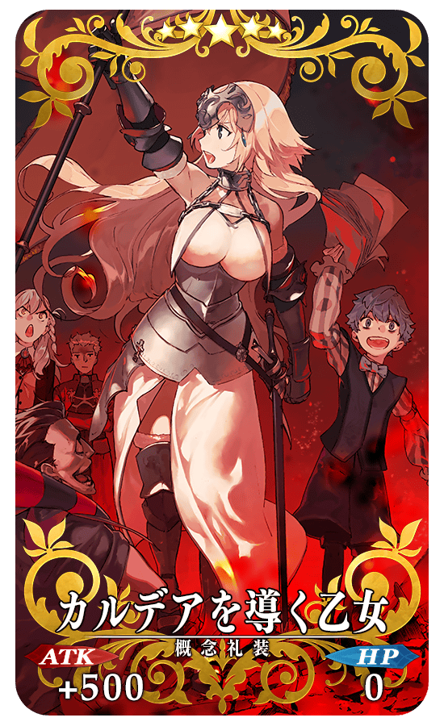 |
★★★★★SSR |
| 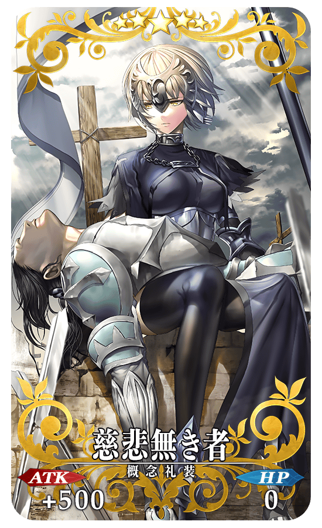 |
★★★★★SSR |
| 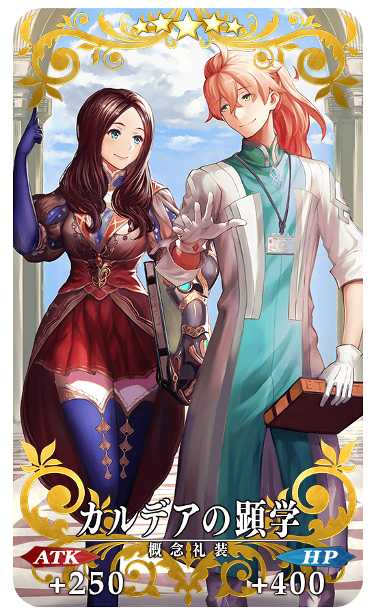 |
★★★★★SSR |
◆交換方法◆
交換期限:2018年1月10日(三) 17:00～1月24日(三) 11:59
※交換期間結束後「手稿(真)」「手稿(偽)」「蒙娜麗莎(偽)」「自畫像(偽)」「人體圖(偽)」會消失。
活動専用道具可自點擊管理室(ターミナル)畫面右上「活動報酬」的「活動道具交換」畫面，交換以下的道具。
◆能用蒙娜麗莎(偽)交換的道具◆
|
【靈衣開放權】 【活動限定概念禮裝】 【技能強化＆靈基再臨素材】 【技能強化素材】 【其他道具】 |
◆能用自畫像(偽)交換的道具◆
|
【活動限定概念禮裝】 【技能強化＆靈基再臨素材】 【技能強化素材】 【其他道具】 |
◆能用人體圖(偽)交換的道具◆
| 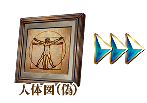 |
【活動限定概念禮裝】 【技能強化＆靈基再臨素材】 【技能強化素材】 【其他道具】 |
新開放「★5(SSR)貞德〔Alter〕」的靈衣。
通過期間限定活動「復刻:達文西與七位贗作英靈 輕量版」的主線關卡的話，能在「活動道具交換」畫面交換「★5(SSR)貞德〔Alter〕」的靈衣開放權！
想開放「★5(SSR)貞德〔Alter〕」的靈衣「邪龍之魔女ver新宿1999」的話，除了靈衣開放權外必須再加上以下的開放條件和素材。
※在「復刻:達文西與七位贗作英靈 輕量版」追加靈衣的Servant只有「★5(SSR)貞德〔Alter〕」。
※「★5(SSR)貞德〔Alter〕」的靈衣開放權只限「復刻:達文西與七位贗作英靈 輕量版」的舉辦期間才能取得。
※「靈衣開放」後自動切換戰鬥角色和圖示。若想回到「靈衣開放」前的狀態和變成其他再臨階段的情況，可自Servant詳細畫面變更。
※「靈衣開放」只變更Servant的外觀，職階和能力等並無變化。
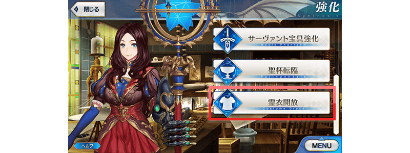
「靈衣開放」可自強化畫面選擇。
介紹開放新靈衣「邪龍之魔女ver新宿1999」的貞德〔Alter〕寶具演出！
在「Fate/Grand Order」官方網站內的公告中，公開了「★5(SSR)貞德〔Alter〕」(靈衣開放後)的寶具演出。敬請確認。
戰鬥中，在寶具發動時會顯示表示發動OverCharge效果的圖示。
※只有顯示的追加，效果並無變更。
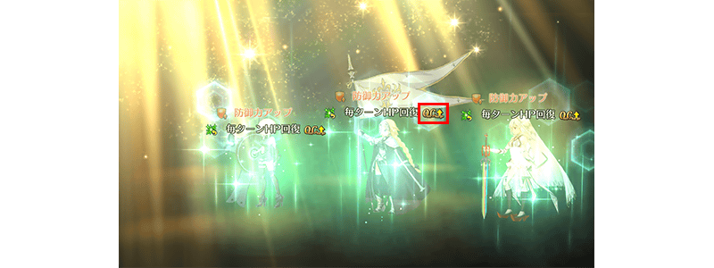
以通過「復刻:達文西與七位贗作英靈 輕量版」的主線關卡及「終局特異點」的Master為對象開放高難易度關卡「挑戰關卡」。 ◆挑戰關卡參加條件◆ ◆挑戰關卡初次通過報酬◆
挑戰關卡就算在通過後也不會消失，能無數次挑戦，可以變更Servant和概念禮裝的組合後再次挑戰。
※關卡通過報酬、戦利品、Master經驗值、魔術禮裝經驗值、絆點數只限在初次通過時獲得。
只限通過「復刻:達文西與七位贗作英靈 輕量版」的主線關卡及「終局特異點」的Master才能參加
傳承結晶 1個
◆「復刻 達文西與七位贗作英靈Pick Up召喚(每日交替)」期間◆
期間:2018年1月10日(三) 17:00～1月24日(三) 11:59
舉辦期間限定「復刻 達文西與七位贗作英靈Pick Up召喚(每日交替)」！
「★5(SSR)李奧納多・達文西」「★5(SSR)貞德〔Alter〕」以期間限定登場！
另外，「★4(SR)齊格飛」「★4(SR)Emiya(Archer)」「★3(R)蓋烏斯・尤利烏斯・凱撒」「★3(R)赫克特」「★3(R)亞歷山大」「★3(R)馮・霍恩海姆・帕拉塞爾斯」「★3(R)吉爾・德・雷(Caster)」常駐Pick Up！
詳情請在聖晶石召喚畫面左下的召喚詳細確認。
※李奧納多・達文西、貞德〔Alter〕在Pick Up期間結束後不會追加到故事召喚。
※Pick Up期間中，吉爾・德・雷(Caster)就算章節通過前也能入手。
※齊格飛、Emiya(Archer)、蓋烏斯・尤利烏斯・凱撒、赫克特、亞歷山大、馮・霍恩海姆・帕拉塞爾斯、吉爾・德・雷(Caster)在Pick Up期間結束後仍會在故事召喚被抽出。
變更在2016年舉辦的「貞德〔Alter〕Pick Up召喚」一部份内容進行復刻。
裝備概念禮裝「★4(SR)毒蛇一芸」「★4(SR)死の芸術」「★4(SR)柔らかな慈愛」的話，會提升活動専用道具的掉落獲得數。
※毒蛇一芸、死の芸術、柔らかな慈愛在Pick Up期間結束後仍會在故事召喚被抽出。
Pick Up期間中，期間限定Servant、Pick Up Servant、Pick Up概念禮裝的出現機率提升！
10次召喚中確定1張★4(SR)以上和確定1位★3(R)以上的Servant！
※確定★4(SR)以上包含Servant和概念禮裝。
※所謂「出現機率提升」意指比同稀有度的Servant及概念禮裝出現機率更高的設定。
| 每日交替Pick Up期間 | 每日交替Pick Up內容 |
|---|---|
| 1月10日(三) 17:00～ 1月12日(五) 22:59 |
貞德〔Alter〕 |
| 1月12日(五) 23:00～ 1月14日(日) 22:59 |
李奧納多・達文西 |
| 1月14日(日) 23:00～ 1月16日(二) 22:59 |
李奧納多・達文西 貞德〔Alter〕 |
| 1月16日(二) 23:00～ 1月18日(四) 22:59 |
貞德〔Alter〕 |
| 1月18日(四) 23:00～ 1月20日(六) 22:59 |
李奧納多・達文西 |
| 1月20日(六) 23:00～ 1月22日(一) 22:59 |
李奧納多・達文西 貞德〔Alter〕 |
| 1月22日(一) 23:00～ 1月24日(三) 11:59 |
貞德〔Alter〕 |
※請注意會以每日交替變更Pick Up的Servant。
介紹李奧納多・達文西、貞德〔Alter〕的寶具演出！
在「Fate/Grand Order」官方網站內的公告中，公開了「★5(SSR)李奧納多・達文西」「★5(SSR)貞德〔Alter〕」的寶具演出。敬請確認。
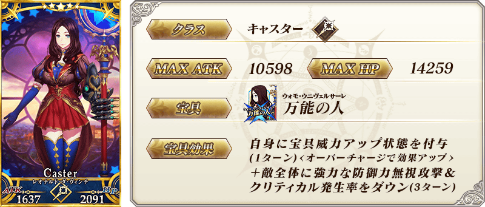
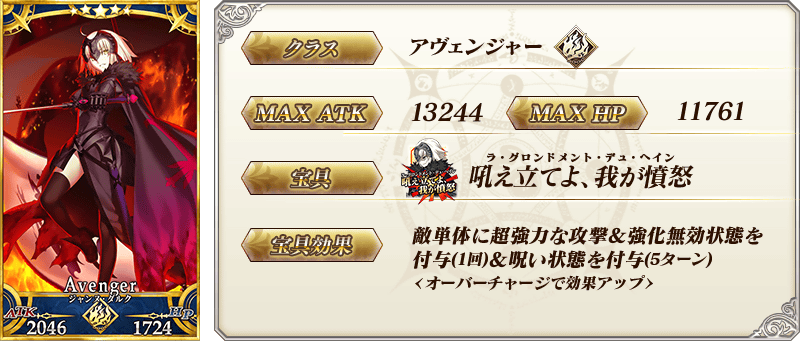
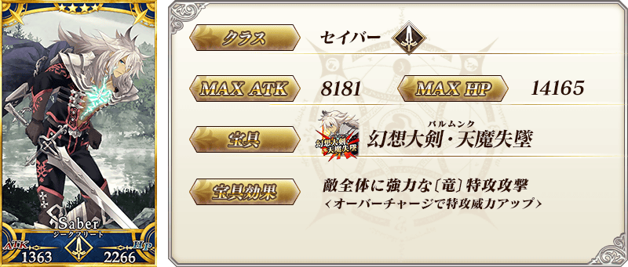


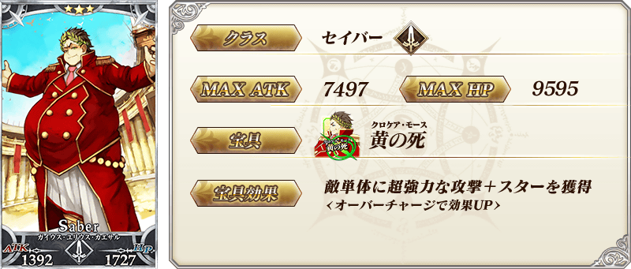
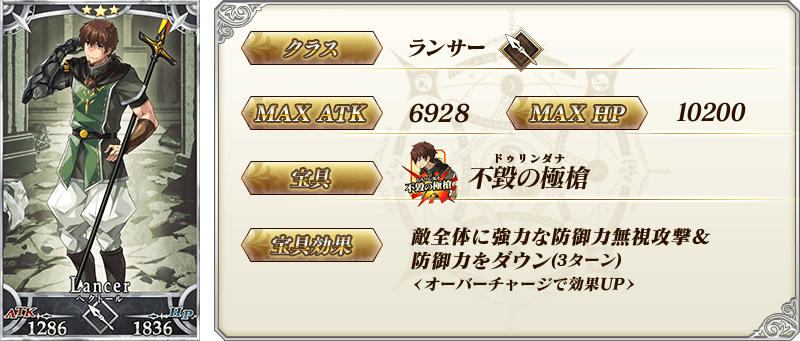

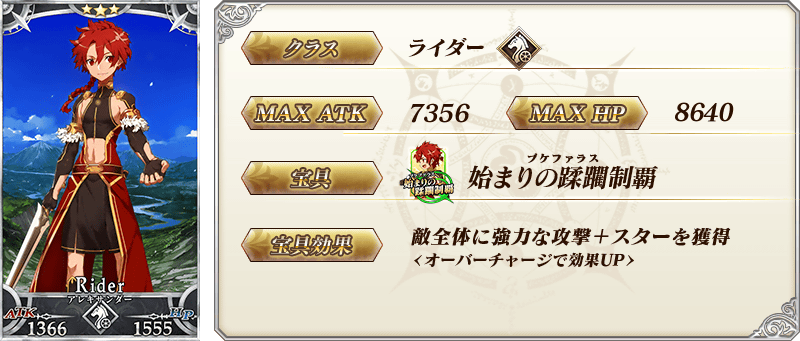
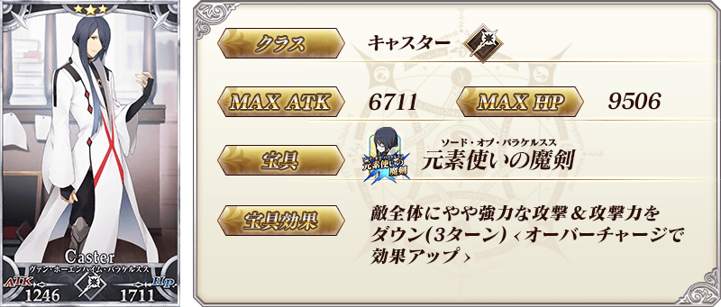
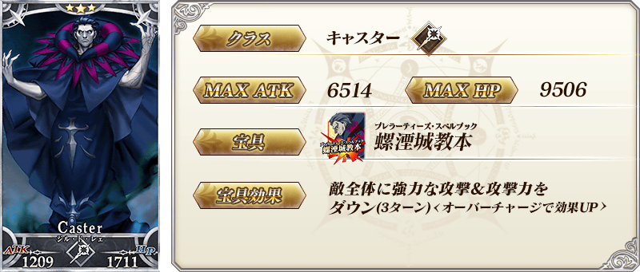
|
★★★★SR |
| 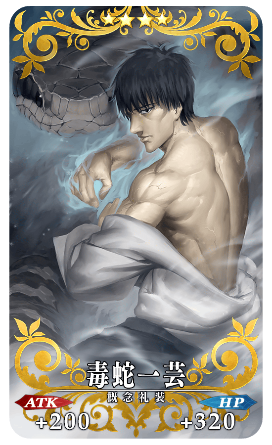 |
★★★★SR |
| 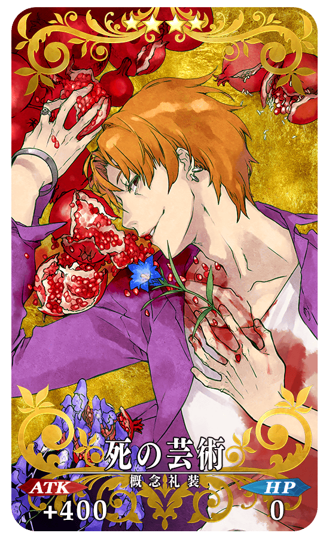 |
★★★★SR |
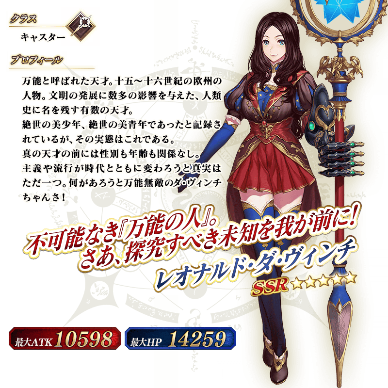
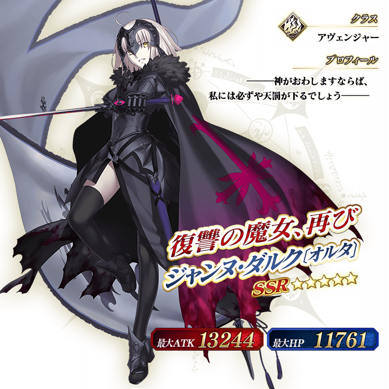